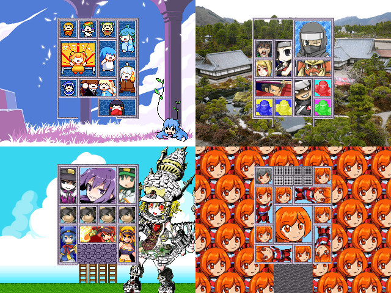

 |
|
| 作者：箱の中に隠れるのよ！ | |
| ジャンル：スライドパズル | |
| ツクール：2000 | |
| 作者コメント： 箱入り娘と言われるタイプの、 パネルを動かして一番大きなパネルを出口へ運ぶだけのシンプルなスライドパズルです。 名作エストポリス伝記Ⅱ曰く世界で一番難しいトリックとも 単純さとは裏腹に非常に難易度が高いです。パズルが得意でない方は精神を病まない程度に。 最初から全問題出現、クリアしてもご褒美等は特に無いので気楽にどうぞ。 余程暇な方は全問クリアや最短手数理論値でも目指してみてください。 |
|
| 管理人コメント： (2*2パネルが)閉じ込められた！！ |
|
| ダウンロード(66.3MB_06/01更新) / 感想掲示板 |
|
| 前の作品 / 次の作品 / TOPへ戻る | |